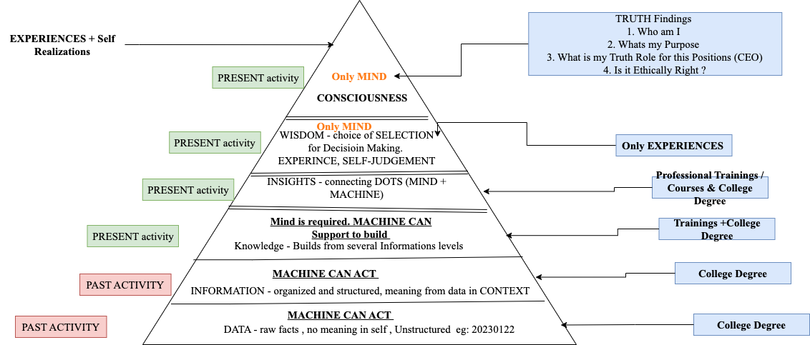

Artificial Intelligence and Wisdom
Data is the primary source of information for both humans and to make machines intelligent. As our brain gets
more knowledge by seeing various data, and from which we comprehend information and knowledge. Similarly to make
machines intelligent enough they need to analyze several data through algorithms often termed as AI Models. AI
Models are supposed to perform certain tasks and the basis to perform those tasks are based on input of data.
However, there is one point where AI does not seems to reach beyond human mind i.e. Wisdom level. AI can extract
information, knowledge from data and act as a decision based system. However, Wisdom is far beyond knowledge where
most of the time ethics and value play a greater role compared to data and information. The extended version of
the DIKW pyramid model gives an idea of AI intelligent machines that can perform tasks and how the source of
knowledge is educated by humans. The left side of the pyramid model diagram represents the source of activity for
input to the machine whereas the right side of the pyramid model represents the source of activity to humans.
- Data is an unorganized form of numbers or characters in a raw fact. Raw data does not provide any meaning
without context such as this number does not have any meaning 20230112. AI tools can be used to process data for
understanding meaning at some context level.
- Information is structured data having a contextual meaning such as this number 20230112 has the contextual
meaning 12th of January 2023. AI tools can be used to analyze information from several sources of data.
- Knowledge gives an answer related to the “how” question from the context information. Both the human mind and
AI machines function as a support system to analyze data for the knowledge building process. Knowledge can be
built through experience and it takes enough time to construct knowledge. knowledge is built upon experimenting
things. Failure is seen as part of the knowledge building process. Failure helps to refine the knowledge.
- Wisdom is the truth of nature. Wisdom is an applied action from several choices of data, information, and
knowledge at the right time and at the right place. Wisdom is at the conscious level of an individual with deep
understanding on the subject. It gives decision making choices about why something was chosen as the best
choice.
Only the human mind would act at the wisdom level. Wisdom is a great asset for human mankind. Wisdom is greatly
influenced by ethics and the value system that governs the philosophy of life. Wisdom can explain the particular
choice and solutions to problems from several alternate solutions. However, wisdom can be directly taught to
students.
- Consciousness is associated with Wisdom. The awareness of present moments and finding truth leads to being in
a conscious phase and that governs the wisdom and philosophy of life.
- Data and Information gives details about past activity. Knowledge and Wisdom are associated with the present
and future moment that governs the action to be taken now and in future.

Note: Future of Education needs to focus at Wisdom and Truth level.